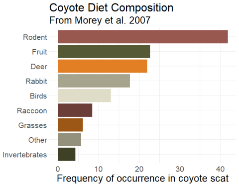
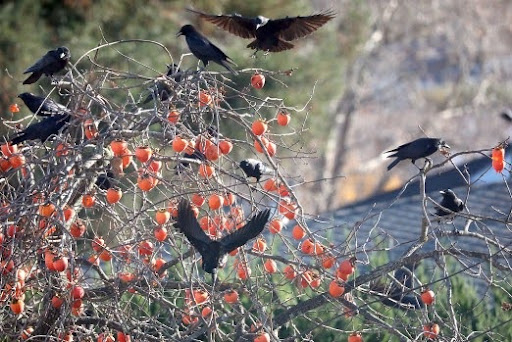
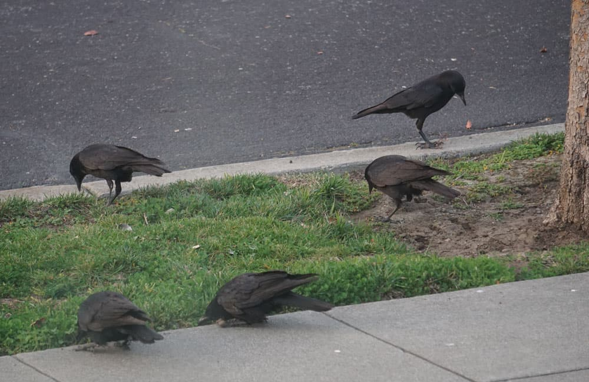
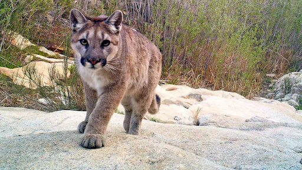
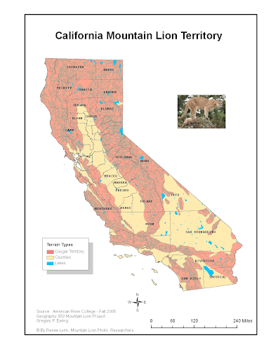

About Us
Our Team
Kyle Chen, Damon Pham, Jehmiel Vinluan, Nathan Kim, & Natalya Gonzalez
Our Project
Our project will be called “UCSC Animals Generator.” Our project’s function is to provide random animals for users to read into. Each animal will have a dedicated pop up to them along with 3 sub-sections. These sub-sections include more information about an animal. These are labeled: diet, habitat, and bio. If the user is indecisive about what animal they want to read about, there will be a random animal button in the top middle of the page.

Coyote

Coyotes are opportunistic omnivores, meaning they eat a wide variety of foods depending on what is available in their environment. Their diet can vary based on the season, geographical location, and local prey availability. In Northern California, the diet of coyotes may include:
1. Small Mammals: Coyotes commonly hunt small mammals such as rabbits, rodents (like squirrels and mice), and sometimes small ungulates like fawns.
2. Birds: They may consume birds, especially ground-nesting birds and their eggs.
3. Insects: Insects can be a significant part of a coyote's diet, especially during certain times of the year.
4. Fruits and Vegetables: Coyotes are known to consume fruits, berries, and vegetables. They might eat agricultural crops if they are available.
5. Carrion: Coyotes are scavengers and will feed on carrion (the flesh of dead animals) when the opportunity arises.
6. Fish: In some areas, coyotes may include fish in their diet, particularly if they live near water bodies.
7. Human Food: In urban or suburban areas, coyotes might scavenge for human food in garbage bins, compost piles, or other accessible sources.
The specific composition of a coyote's diet in Northern California can be influenced by factors such as the presence of urban areas, agricultural activities, and the local ecosystem. It's important to note that coyotes are adaptable and can adjust their diet based on what is available to them in their environment.
 Coyotes are highly adaptable animals and can be found in a variety of habitats, including those in Northern California. The specific habitat of coyotes in this region can vary, but generally, they are known to inhabit the following types of environments:
Coyotes are highly adaptable animals and can be found in a variety of habitats, including those in Northern California. The specific habitat of coyotes in this region can vary, but generally, they are known to inhabit the following types of environments:
1. Grasslands: Coyotes are often found in grassy areas, where they can hunt small mammals like rodents and rabbits.
2. Woodlands: They can thrive in wooded areas, including forests and woodlands, where they find cover and potential prey.
3. Chaparral: Coyotes may inhabit chaparral ecosystems, characterized by dense, woody shrubs.
4. Urban and Suburban Areas: Coyotes have adapted well to human-modified environments and can be found in urban and suburban areas, particularly where there are parks, green spaces, and sufficient food sources.
Coyotes are versatile and can adjust their habitat preferences based on food availability, water sources, and shelter. They are known for their ability to coexist with humans, and this adaptability has contributed to their widespread distribution across North America, including Northern California.
 Fun Facts about coyotes:
Fun Facts about coyotes:
1. Clever Problem-Solvers: Coyotes are known for their intelligence and problem-solving skills. They can adapt to various situations and environments, often finding creative solutions to challenges they encounter.
2. Eco-friendly Pest Control: Coyotes play a valuable role in natural pest control. They help keep rodent populations in check by preying on mice and rats, making them beneficial for agriculture and human settlements.
3. Fast Eaters: Coyotes are efficient eaters. They have been observed consuming large quantities of food quickly, which is an adaptation that allows them to eat fast and move on, reducing the risk of being scavenged by larger predators.
4. Diverse Coat Colors: Coyotes exhibit a range of coat colors, including shades of gray, brown, red, and even black. This diversity in coat coloration can be influenced by geographic location and genetic factors, resulting in a visually interesting population of coyotes.

Crow
  Crows are highly adaptable birds with omnivorous diets, and their specific diet in Northern California can vary based on the season, availability of food, and local habitat. Generally, a crow's diet may include:
Crows are highly adaptable birds with omnivorous diets, and their specific diet in Northern California can vary based on the season, availability of food, and local habitat. Generally, a crow's diet may include:
1. Insects: Crows feed on a variety of insects, including beetles, grasshoppers, caterpillars, and other small invertebrates.
2. Small Vertebrates: They are known to eat small vertebrates such as rodents, small birds, and bird eggs.
3. Carrion: Crows are scavengers and often consume carrion (the flesh of dead animals). They play a crucial role in cleaning up the environment by removing carcasses.
4. Fruits and Seeds: Crows have a diverse diet that includes fruits, berries, and seeds. They are opportunistic feeders and will eat whatever is available.
7. Nuts: Crows can crack open nuts using their strong beaks, including hard-shelled nuts like walnuts.

Crows are highly adaptable birds and can be found in a variety of habitats, including urban, suburban, and rural areas. In Northern California, crows can be commonly observed in the following habitats:
1. Urban and Suburban Areas: Crows are highly adaptable to human-modified environments. They thrive in cities and suburbs, taking advantage of the abundant food resources, including human waste and discarded food.
2. Wooded Areas: Crows are often found in wooded areas, including forests and wooded parks. These environments provide roosting sites and natural food sources.
3. Open Fields and Grasslands: Crows may inhabit open fields and grasslands, where they can find a variety of food sources, including insects, small vertebrates, and seeds.
4. Coastal Areas: In coastal regions of Northern California, crows may be found near shorelines, taking advantage of marine life and human activities along the coast.
 1. Tool Use and Problem-Solving Skills: Crows are known for their exceptional intelligence and problem-solving abilities. They have been observed using tools, such as sticks, to extract insects from tree bark or even creating makeshift tools by modifying existing objects. This ability to use tools for specific tasks is a behavior not commonly seen in many bird species.
2. Complex Communication: Crows have a sophisticated system of communication. They use a variety of vocalizations to convey different messages, and they can even mimic sounds from their environment, including the calls of other bird species and human-made noises. Crows are also known for their ability to recognize and remember human faces.
3. Funeral Behavior: There have been observations suggesting that crows engage in what appears to be "funeral" behavior. When a member of their group dies, crows may gather and exhibit behaviors that resemble mourning. While the exact reasons for this behavior are not fully understood, it suggests a level of social complexity and emotional depth in these birds.
1. Tool Use and Problem-Solving Skills: Crows are known for their exceptional intelligence and problem-solving abilities. They have been observed using tools, such as sticks, to extract insects from tree bark or even creating makeshift tools by modifying existing objects. This ability to use tools for specific tasks is a behavior not commonly seen in many bird species.
2. Complex Communication: Crows have a sophisticated system of communication. They use a variety of vocalizations to convey different messages, and they can even mimic sounds from their environment, including the calls of other bird species and human-made noises. Crows are also known for their ability to recognize and remember human faces.
3. Funeral Behavior: There have been observations suggesting that crows engage in what appears to be "funeral" behavior. When a member of their group dies, crows may gather and exhibit behaviors that resemble mourning. While the exact reasons for this behavior are not fully understood, it suggests a level of social complexity and emotional depth in these birds.
Deer


The Black Tailed Deer are herbivores and eat a variety of shrubs, trees, and grasses. A few examples of these would be willow, salmonberry, poison oak, red huckleberry, and lichens that grow on trees. During late spring to fall their diet changes slightly, with an integration of blackberries, apples, maple, and forbs.

These deer live along the Pacific coast from north to southeastern Alaska to northern and western California. However, the most common place to find them is in California, but their range is large, spanning from Santa Barbara County up to Washington. They tend to live on the edge of forests, a transition zone of vegetation between forests and pastures or crop fields. These tend to be safer areas because the dark forest lacks the type of brush that these deer prefer, and open areas lack the hiding spots that they need for protection. With the changing seasons, they migrate to different areas as a way to avoid deep snow and any other harsh conditions they may encounter as winter takes over.

Black tailed deer are a medium sized breed with a gray-brown coat in the winter and a reddish-brown coat in the summer. Their most noticeable feature is their blacked-tipped tail. November and early December are their mating season and bucks can be seen running back and forth across roads in search of mates. After mating, they spend the rest of the season recovering from broken antlers and weight loss. Most fawns are born in late May and into June, twins are typical but single and triplets can also occur. When they are born, they have no scent, which enables the mother to hide her offspring while she goes off to forage. Deer communicate through scent and have multiple glands on their lower legs that produce different scents and pheromones. The outside of their lower leg produces an alarm scent, the inside of their hock shows mutual recognition, and between their hooves enables a scent trail that other deer can follow when they travel. Knowing this information, deer have excellent sight and smell that help them avoid danger.
Koi
 Kois are omnivores which means they mostly eat plants and bugs. In the wild they algae, insects, worms, seeds, and other plants and bugs.
Which is they're main source of food. They also sometimes eat other fish eggs and dead animals and plants. THey can be found to eat any food in area of their body of water from surface to
depths of their pond. When it comes to domesticated koi they're diet can go from types of fish food like Spirulina Algae (Fish Food pellet that uses algae) and Brine Shrimp(Very small Shrimp that's been bio-enriched). But with a koi's diet
any carbohydrates isn't good for the koi because they have a hard time digesting those types of foods.
Kois are omnivores which means they mostly eat plants and bugs. In the wild they algae, insects, worms, seeds, and other plants and bugs.
Which is they're main source of food. They also sometimes eat other fish eggs and dead animals and plants. THey can be found to eat any food in area of their body of water from surface to
depths of their pond. When it comes to domesticated koi they're diet can go from types of fish food like Spirulina Algae (Fish Food pellet that uses algae) and Brine Shrimp(Very small Shrimp that's been bio-enriched). But with a koi's diet
any carbohydrates isn't good for the koi because they have a hard time digesting those types of foods.
 A wild Koi's habitat is freshwater bodies. It is found mostly in the Black Sea, Caspian Sea, and Aral Sea.
Sometimes Koi would migrate in flooded areas to their freashwater areas to lay their eggs.
With the Koi being domesticated it now lives all over the world in diffierent types of freshwater ponds.
In the case of UCSC, the school has a Koi pond habitat at Porter College.
A wild Koi's habitat is freshwater bodies. It is found mostly in the Black Sea, Caspian Sea, and Aral Sea.
Sometimes Koi would migrate in flooded areas to their freashwater areas to lay their eggs.
With the Koi being domesticated it now lives all over the world in diffierent types of freshwater ponds.
In the case of UCSC, the school has a Koi pond habitat at Porter College.
 When it comes to the a Koi's inner biology it has a few different parts. Starting with the swimbladder
which is located near the top of the koi's body. It helps the koi with it's movement from the depths of the water as well as making so the koi uses less energy while swimming
When it comes to the a Koi's inner biology it has a few different parts. Starting with the swimbladder
which is located near the top of the koi's body. It helps the koi with it's movement from the depths of the water as well as making so the koi uses less energy while swimming
.
The part is the gills it's main point is respiration for the koi, as it allows oxygen to flow to the koi's body using the water around.
With the heart of the koi it similar to ours as it pumps blood with oxygen from the gills to the rest of our body.
The Liver of the Koi breaks anything unwanted from the food it eats like toxins and proteins that's not needed.
The Gonads are the koi's reproduction organs that store either eggs or sperm.
The Vent where the waste of the koi's system exits out from.
With the Spleen it the main area of producing cells for the immune system of the koi

Lizard


These lizards eat a large variety of different arthropods and insects. A few examples of these would be beetles, mites, ants, spiders, scorpions, and sow bugs. They will rarely ever hunt because they feed opportunistically on any insect that passes near them. Their feeding habits are also influenced by sex, season, and body temperature. They will also occasionally eat plants if they urgently need water.
The habitat of these creatures varies widely, ranging from arid biomes with scattered bushes to sandy areas with lots of rocks. They tend to gravitate toward sandier ecosystems with lots of rocks because they bask on rocks in order to get their body temperature up.

The common side-blotched lizard is native to dry regions and can be found throughout western United States and northern Mexico. They are a small species of lizard and usually only reach 2.4 inches in length. Some distinguishing characteristics in males are the blue flecks spread across their body or their yellow and orange sides. Females tend to have stripes along their body or could be unpatterned. Their mating follows a “rock-paper-scissors mechanism” where the differences in each male's throat color plays a large role in how they compete for mates. The three morphs seen in these lizards are orange throated males, blue throated males, and yellow throated males. The cycle seen every year is that the least common morph will have the largest number of mature living offspring in the next year. With studies done recently, this can be summarized as “orange beats blue, blue beats yellow, and yellow beats orange", which is similar to the rules of rock-paper-scissors.” In turn, orange throated females tend to produce larger amounts of eggs, meanwhile yellow throated females lay fewer, yet larger, eggs.
Mountain Lion
  The diet of mountain lions mostly consists of deer, and they would kill a deer about once a week. Mountain Lions would also eat coyotes, raccoons, rodents, elk, feral hogs, and porcupines. Being opportunistic hunters, they also prey on smaller animals such as squirrels.
Mountain Lions tend to drag their meals and relocate them. Once they chose a location, they would cover their meals in grass, dry leaves, or pine needles. This would protect the food from being discovered by other animal and reduces spoilage.
Cougars are ambush predators, where they catch their unsuspecting prey rather than chasing them.
Their brute strength isn’t comparable to a bear, so they use their speed and precision to secure their prey.
Mountain lions will hunt till their hunger and the hunger of their kittens is satiated making them relentless hunters.
The diet of mountain lions mostly consists of deer, and they would kill a deer about once a week. Mountain Lions would also eat coyotes, raccoons, rodents, elk, feral hogs, and porcupines. Being opportunistic hunters, they also prey on smaller animals such as squirrels.
Mountain Lions tend to drag their meals and relocate them. Once they chose a location, they would cover their meals in grass, dry leaves, or pine needles. This would protect the food from being discovered by other animal and reduces spoilage.
Cougars are ambush predators, where they catch their unsuspecting prey rather than chasing them.
Their brute strength isn’t comparable to a bear, so they use their speed and precision to secure their prey.
Mountain lions will hunt till their hunger and the hunger of their kittens is satiated making them relentless hunters.
 Mountain Lions prefer areas with cover and large prey. These habitats are dense forests, bush-abundant mountains, and rocky canyons. All these habitats provide the predator with natural cover from unsuspecting prey. Of course, having a diet of mostly deer, the habitat must be suitable for deer. Deer are abundant in foraging areas as well as areas with cover. Cover, in return, gives deer a chance to escape from predators. Other factors influence the mountain lions' choice of habitable land. Male mountain lions decide their home range based on the abundance of potential mates. Females favor somewhat secluded home ranges that would keep their kittens safe. Source
 Mountain lions have long and sleek bodies.
They have long legs with big feet that have retractable claws.
These large cats have large and sharp canine teeth and special molars that are used to stab and tear into prey.
The coat of mountain lions is very short and is primarily tan.
The underside of its body is white.
Because of their bone structure, mountain lions are unable to roar.
Instead, they can purr, hiss, growl, yowl, and scream.
Source
Mountain lions have long and sleek bodies.
They have long legs with big feet that have retractable claws.
These large cats have large and sharp canine teeth and special molars that are used to stab and tear into prey.
The coat of mountain lions is very short and is primarily tan.
The underside of its body is white.
Because of their bone structure, mountain lions are unable to roar.
Instead, they can purr, hiss, growl, yowl, and scream.
Source
Raccoon

 A raccoon's diet is diverse and includes both plant and animal matter. Raccoons are known to consume fruits, nuts, berries, and vegetables.
However, they are equally skilled hunters and scavengers, preying on small mammals, birds, insects, and even amphibians.
Raccoons are also notorious for raiding trash cans and dumpsters, showcasing their scavenging tendencies in urban settings.
A raccoon's diet is diverse and includes both plant and animal matter. Raccoons are known to consume fruits, nuts, berries, and vegetables.
However, they are equally skilled hunters and scavengers, preying on small mammals, birds, insects, and even amphibians.
Raccoons are also notorious for raiding trash cans and dumpsters, showcasing their scavenging tendencies in urban settings.
 Raccoons are highly adaptable mammals, and their habitats vary widely, encompassing both natural and urban environments.
They are commonly found in deciduous and mixed forests, where they utilize tree dens for shelter. Raccoons are equally at home in urban areas,
taking advantage of human-made structures like attics, chimneys, and crawl spaces for nesting.
Raccoons are highly adaptable mammals, and their habitats vary widely, encompassing both natural and urban environments.
They are commonly found in deciduous and mixed forests, where they utilize tree dens for shelter. Raccoons are equally at home in urban areas,
taking advantage of human-made structures like attics, chimneys, and crawl spaces for nesting.
Raccoons, scientifically known as Procyon lotor, are medium-sized mammals native to North America but have also been introduced to other parts of the world.
Characterized by their distinctive black mask across their eyes and ringed tail, raccoons are well-adapted to a variety of habitats.
Banana Slug

 Banana slugs are mostly herbivores as well as decomposers, they eat almost anything plant-based.
From leaves, roots, stems, flowers, seeds and fruits. They also sometimes eat poison oak while most animals try to avoid poison oaks banana slugs have no problem eating it.
Banana slugs will also eat different types of fungi like most mushrooms. Sometimes banana slugs will also eat animal feces and and dead organic matter like dead leaves. But for the most part, Banana slugs eat anything that's plants.
Banana slugs are mostly herbivores as well as decomposers, they eat almost anything plant-based.
From leaves, roots, stems, flowers, seeds and fruits. They also sometimes eat poison oak while most animals try to avoid poison oaks banana slugs have no problem eating it.
Banana slugs will also eat different types of fungi like most mushrooms. Sometimes banana slugs will also eat animal feces and and dead organic matter like dead leaves. But for the most part, Banana slugs eat anything that's plants.
 The habitat of the Banana Slugs is forests that are dense and moist. Found on leaves and the wet floor of the forest. They can be found in the Pacific Northwest from Central California to Alaska.
They can be found around our school especially on damp days after rain.
The habitat of the Banana Slugs is forests that are dense and moist. Found on leaves and the wet floor of the forest. They can be found in the Pacific Northwest from Central California to Alaska.
They can be found around our school especially on damp days after rain.
So the anatomy of a banana has many different elements. One of the key points of the Banana slug is the pneumostome where it holds its respiratory pore, lung, and reproductive organs. The gonopore is another part that gives life to the banana slug, it's where its eggs exit. Now with its tentacles, the upper ones are for seeing and smelling. While the lower ones are for taste and feeling, with the radula being the slug's mouth.
SourceSquirrel

 Squirrels are herbivorous rodents, with a diet that varies depending on species and environmental factors.
Their primary food sources include nuts, seeds, fruits, and fungi, but they may also consume insects, bird eggs, and small vertebrateas.
Squirrels are herbivorous rodents, with a diet that varies depending on species and environmental factors.
Their primary food sources include nuts, seeds, fruits, and fungi, but they may also consume insects, bird eggs, and small vertebrateas.
Squirrels are highly adaptable and can be found in a wide range of environments, including forests, parks, gardens, and urban areas. Tree-dwelling species often build nests called dreys in the branches, while ground squirrels dig burrows for shelter and protection.
 Squirrels belong to the family Sciuridae, which includes various species such as tree squirrels, ground squirrels, and flying squirrels.
Characterized by their sharp incisor teeth that continuously grow, squirrels have a distinctive bushy tail that aids in balance and communication.
Squirrels belong to the family Sciuridae, which includes various species such as tree squirrels, ground squirrels, and flying squirrels.
Characterized by their sharp incisor teeth that continuously grow, squirrels have a distinctive bushy tail that aids in balance and communication.

Turkey
 Turkeys are omnivores and eat anything they can find, including grasses,
invertebrates, forbs, seeds, tubers, nuts, fruits, and occasionally small mammals,
reptiles, or amphibians. While plants usually make up for most of the turkey’s diet,
insects would be their main source of protein.
Turkeys would spend the day scratching and pecking at the ground searching for food.
The food will be stored in the bird’s crop (a chamber within the esophagus) before it is swallowed.
Source
Turkeys are omnivores and eat anything they can find, including grasses,
invertebrates, forbs, seeds, tubers, nuts, fruits, and occasionally small mammals,
reptiles, or amphibians. While plants usually make up for most of the turkey’s diet,
insects would be their main source of protein.
Turkeys would spend the day scratching and pecking at the ground searching for food.
The food will be stored in the bird’s crop (a chamber within the esophagus) before it is swallowed.
Source
The wild turkeys were introduced to California in 1877. With this introduction, turkeys have resided in many portions of the state. The most common turkey (The Rio Grande Turkey), is found mostly in deciduous riparian oak and conifer-oak woodlands. Merriam Turkeys (a subspecies of turkey) are found in higher elevations in conifer-black oak habitats. Generally, turkeys habit in areas with a mix of large trees with grassy openings near water. They also reside in rugged and hilly terrain which allows them to avoid predators easier. Source
Turkeys are distinct due to their large size, compared to common smaller birds. Wild turkeys have long reddish-yellow to grayish-green legs. The male turkeys have body feathers that are blackish and dark. Female turkeys have duller feathers that are often gray-brown with a coppery sheen. Male turkeys are polygamous, meaning that they strut their feathers and show off their tail to impress females. Females tend to adventure alone to find a safe nest site. These nests are usually found in tall grass, ground covers, or thick shrubs that allow the adult and eggs to hide. Turkeys are also a flocking species, so they tend to stick with their kind. Source